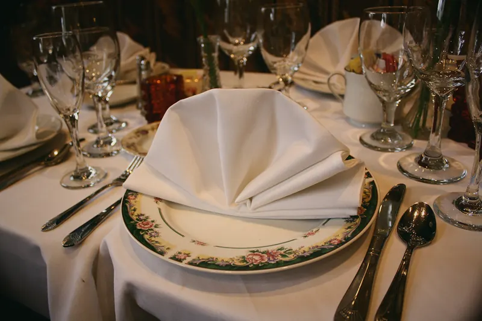

The Bar · Wine & Spirits
Kentucky,poured slowly.
110bourbons
on the list
on the list
Urban Bourbon Trail
A proud member of Louisville’s bourbon trail.
Behind the Moon Garden’s white flowers stands one of Old Louisville’s deepest bourbon shelves — from everyday pours to Pappy Van Winkle, Old Rip Van Winkle and Buck’s own label.
Ask at the bar for a recommendation, or for this month’s cocktail from General Manager Kris Littrell’s Kris Creates series.
The bourbon list · 110 labels
#
- 1792 Distillery Small Batch93.7°
A
- Angel’s Envy86.6°
B
- Baker’s107°
- Baker's Single Barrel 7 yr.107°
- Basil Hayden 8 yr.80°
- Basil Hayden 10 yr.80°
- Basil Hayden Toast80°
- Benchmark80°
- Bernheim90°
- Bib & Tucker Small Batch 6 yr.92°
- Bird Dog84°
- Bird Dog 7 yr.88°
- Bird Dog 15 yr.
- Blackened90°
- Blade & Bow91°
- Blanton’s93°
- Blood Oath98.6°
- Booker’s128.6°
- Booker's Little Book116.8°
- Buck’s90°
- Buffalo Trace90°
- Bulleit90°
- Bulleit 10 year91.2°
C
- Calumet Farm 12 yr
- Calumet Farm 14 yr96.2°
- Castle & Key Small Batch
- Colonel E.H. Taylor Barrel Proof129.3°
- Colonel E.H. Taylor Single Barrel100°
- Colonel E.H. Taylor Small Batch100°
E
- Eagle Rare90°
- Elijah Craig Barrel Proof135.2°
- Elijah Craig Single Barrel
- Elijah Craig Small Batch94°
- Elmer T Lee90°
- Evan Williams 10 year86.6°
F
- Four Roses80°
- Four Roses 130 Anniversary108.3°
- Four Roses Single Barrel100°
- Four Roses Small Batch90°
- Four Roses Small Batch Limited Edition
G
- Green River90°
H
- Heaven's Door92°
- Heaven's Door Double Barrel100°
I
- IW Harper82°
- IW Harper 15 year86°
J
- Jefferson’s Reserve90.2°
- Jim Beam Double Oak86°
- Jim Beam White Label 4 year80°
- John E. Fitzgerald Larceny Barrel Proof123.8°
- John E. Fitzgerald Larceny Small Batch92°
- Johnny Drum Private Stock101°
K
- Kentucky Owl121°
- Kentucky Owl Wiseman90.8°
- Knob Creek100°
M
- Maker’s Mark90°
- Maker’s Mark “46”94°
- Maker's Mark 101 Proof Limited Release101°
- Michter's Single Barrel 10 yr.94.4°
- Michter's Toasted Barrel Limited Release91.4°
- Michter's Barrel Proof
- Michter's US #1 Small Batch91.4°
- Michter's Sour Mash86°
- Monk's Road
N
- Noah’s Mill114.3°
O
- Old Fitzgerald86°
- Old Forester86°
- Old Forester Signature100°
- Old Forester Birthday
- Old Forester 1870 Original Batch90°
- Old Forester 1910 Old Fine Whiskey
- Old Forester 1920 Prohibition
- Old Grand Dad 100 Proof100°
- Old Grand Dad 114114°
- Old Rip Van Winkle 10 yr.107°
- Old Rip Van Winkle 2001
- Orphan Barrel Rhetoric 21 yr.
- Orphan Barrel Rhetoric 22 yr.
P
- Pappy Van Winkle Family Reserve 15 yr.
- Pappy Van Winkle Family Reserve 20 yr.
- Pappy Van Winkle Family Reserve 23 yr.
- Parker's Heritage Collection 8 yr.
- Peerless Small Batch
- Pure Kentucky107°
R
- Rabbit Hole95°
- Rebel Yell
- Rock Hill Farms Single Barrel100°
- Rowan's Creek100.1°
- Russell's Reserve Small Batch 10 yr.90°
S
- Sam Houston90°
- Shenk's Sour Mash91.2°
- Smooth Ambler Old Scout 10 yr.
- Stagg Jr. Barrel Proof Unfiltered132.1°
- Stellum
V
- Very Old Barton86°
W
- Wathen’s94°
- Weller 107 Antique107°
- Weller Special Reserve90°
- Weller 12 year90°
- Whistle Pig 12 yr.
- Wild Turkey 80 proof80°
- Wild Turkey 101101°
- Wild Turkey Diamond Edition91°
- Wild Turkey Rare Breed108.2°
- Wilderness Trail Family Reserve
- Willett Pot Still Reserve94°
- Woodford Reserve Distiller’s Select90.4°
- Woodford Reserve Double Oaked90.4°
- Woodford Reserve Master’s Collection90.4°
Bottled in Bond
- Old Fitzgerald100°
- Old Forester 1897
Proof shown where listed. Selection changes with availability.
The Cellar
Wines by the glass & bottle.

Wines by the Glass
Sparkling Wines
- Freixenet Moscato, Sparkling, "Mia Fruity & Sweet," Spain
- La Marca Prosecco, Italy
- Korbel Brut, California
White Wines
- Beringer White Zinfandel, American, USA
- Hogue Cellars Riesling, Late Harvest, Columbia Valley, Washington
- Folonari Pinot Grigio, Delle Venezie, Italy
- Château La Freynelle Blanc, Bordeaux, France
- Daou Rosé, Paso Robles, California
- A to Z Wineworks Chardonnay, Oregon
- Murphy-Goode Sauvignon Blanc, North Coast, California
- Bonterra Chardonnay, Made with Organic Grapes, California
- Pine Ridge Chenin Blanc/Viognier, Clarksburg California
Red Wines
- Villa M Sweet Rosso, Dolce, Italy
- Cline Cellars Pinot Noir, Sonoma County, California
- Vidal Fleury Côtes du Rhône, Rhône, France
- Don Miguel Gascón Malbec, Mendoza, Argentina
- Mercer Merlot, "Mercer Bros.", Horse Heaven Hills, Washington
- La Boulangerie Cabernet Sauvignon, Vin de France
- Château La Freynelle Cabernet Sauvignon, Bordeaux, France
- Decoy Zinfandel, Sonoma County, California
- Austin Hope Red Blend, "Troublemaker", Central Coast, California
- Submission Cabernet Sauvignon, California
- Treana Cabernet Sauvignon, Paso Robles, California
- Pessimist Red Blend, Paso Robles, California
Wines by the Bottle
Champagne/Sparkling
- Beau Joie Demi Sec, "Sugar King", Champagne, France
- Veuve du Vernay Brut, France
- La Marca Prosecco, Italy
- Korbel Brut, California
- Chandon Brut, "Reserve", Napa County, California
- Beau Joie Brut Rosé, Champagne, France
- Moët & Chandon Brut, "Impérial", Champagne, France
- Dom Pérignon Brut, Champagne, France
White/Rosé/Blush Wines
- Michele Chiarlo Moscato d'Asti, "Nivole", Piedmont, Italy
- Beringer White Zinfandel, American, USA
- Hogue Cellars Riesling Johannisberg, Columbia Valley, Washington
- Folonari Pinot Grigio, Delle Venezie, Italy
- Daou Rosé, Paso Robles, California
- Livio Felluga Pinot Grigio, Friuli Colli Orientali, Friuli, Italy
- A to Z Wineworks Chardonnay, Oregon
- Murphy-Goode Sauvignon Blanc, North Coast, California
- Bouchard Père & Fils Pouilly Fuissé, Burgundy, France
- Pine Ridge Chenin Blanc/Viognier, Clarksburg, California
- Bonterra Chardonnay, Made with Organic Grapes, California
- La Crema Chardonnay, Monterey, California
- Cakebread Cellars Chardonnay, Napa Valley, California
- Flowers Chardonnay, Sonoma Coast, California
- Far Niente Chardonnay, Napa Valley, California
Cabernet Sauvignon
- La Boulangerie Cabernet Sauvignon, Vin de France
- Château La Freynelle Cabernet Sauvignon, Bordeaux, France
- Submission Cabernet Sauvignon, Paso Robles, California
- The Prisoner Wine Company Cabernet Sauvignon, "Unshackled", California
- Decoy Napa Valley, California
- Bella Union by Far Niente Cabernet Sauvignon, Napa Valley
- Silver Oak Cabernet Sauvignon, Alexander Valley, California
- Stags' Leap Winery Cabernet Sauvignon, Napa Valley, California
- Caymus Vineyards Cabernet Sauvignon, Napa Valley, California
- Cakebread Cellars Cabernet Sauvignon, Napa Valley, California
- The Mascot Cabernet Sauvignon, "by Harlan Cellars", Napa Valley, California
- Joseph Phelps Cabernet Sauvignon, Napa Valley, California
Pinot Noir
- La Crema Pinot Noir, Monterey, California
- Cline Cellars Pinot Noir, "Cool Climate", Sonoma Coast, California
- Louis Latour Gevrey Chambertin, "Lavaut St. Jacques", Burgundy, France
- Belle Glos Pinot Noir, "Dairyman Vineyard", Russian River
- Valley California
Merlot/Zinfandel
- Decoy Zinfandel, Sonoma County, California
- Turley Zinfandel, "Old Vines", California
- Mercer Merlot, "Mercer Bros.", Horse Heaven Hills, Washington
- Freemark Abbey Merlot, Napa Valley, California
Interesting Reds
- Villa M Sweet Rosso, Dolce, Italy
- Vidal Fleury Côtes du Rhône, Rhône, France
- Don Miguel Gascón Malbec, Mendoza, Argentina
- Delas Crozes Hermitage, "Le Clos", Rhône, France
- Pessimist Red Blend, California
- Austin Hope Red Blend, "Troublemaker", Central Coast, California
- The Prisoner Wine Company Red Blend, California
- Trefethen Cabernet Franc, Oak Knoll District of Napa Valley, California
- Ashes & Diamonds Rouge, Napa Valley
- Daou "Bodyguard", Paso Robles, California